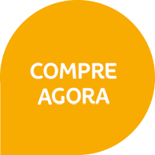

Conforto e
sustentabilidade
para o seu dia a
dia com
Conforto e
sustentabilidade
para o seu dia a
dia com
Conheça a mais nova opção de copos descartáveis do mercado, feito com o papelcartão Bluecup®, produzido a partir de fontes renováveis. Mais uma inovação Suzano para você, unindo praticidade e responsabilidade com o meio ambiente!

• Estoques regionais possibilitando abastecimento contínuo.
• Compre utilizando sua linha de crédito com a Suzano.
• Entrega direta na sua empresa.
• Aproveite o frete do Papel para fazer seu pedido de copo.
A produção do Bluecup® faz parte de uma cadeia de ações positivas, contribuindo para transformações que vão muito além do mercado:
• Desenvolvimento regional sustentável
• 45% das florestas são reservas naturas
• 85% da energia consumida vem de fonts renováveis
• + de 700 mil pessoas são impactadas com projetos sociais